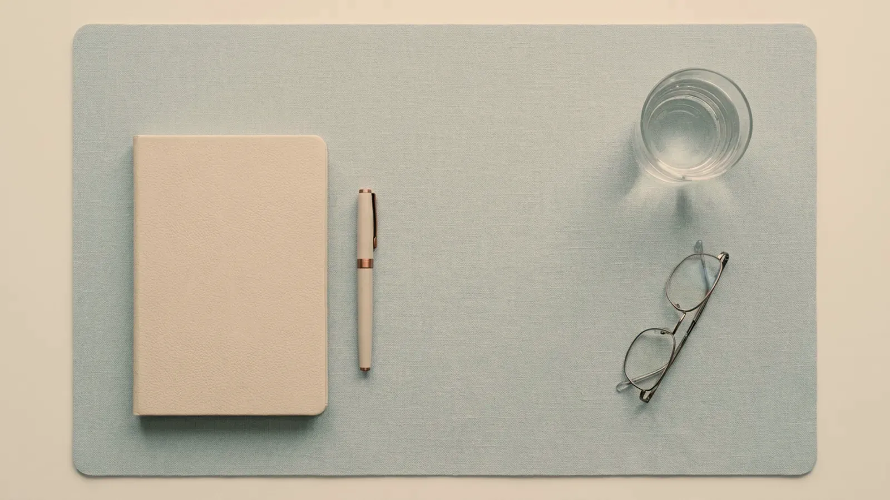

Sık sorulanlar · Soru-cevap
Sıkça sorulan sorular
Bu sayfada, telefonda ve muayenede en sık duyduğumuz soruların yanıtları iki bölüm hâlinde yer alıyor. İlkinde randevu, ulaşım ve görüşme öncesi hazırlık; ikincisinde dövme silme dâhil uygulamaların seyri, sonrası, kapsam ve mevzuat yer alıyor. Yanıtlar genel bilgi verir; size özel plan muayeneden sonra kurulur.

Görsel yapay zekâ ile üretilmiştirRandevu ve hazırlık
Randevudan ilk görüşmeye kadar neler merak ediliyor?
Randevu, ulaşım ve görüşme öncesi hazırlıkla ilgili sorular. Bir soruya dokunduğunuzda yanıtı yan tarafta açılır.
Uygulamalar, sonrası ve kapsam
İşlem günü ve sonrasında neler merak ediliyor?
Dövme silme dâhil uygulamaların seyri, sonrasında dikkat edilecekler, kapsam ve mevzuatla ilgili en sık gelen sorular.
İlgili başlıklar
Buradan devam edebilirsiniz
Yaklaşımımız
Muayeneden kontrole uzanan basamakların neden kısaltılmadığını anlatan sayfa.
İnceleUygulamalar
Muayenehanede yapılan uygulamalar; her birinin planlaması, sınırları ve olası etkileri.
Listeye gitNeden bazı işlemleri yapmıyoruz
Kapsamın nerede bittiği ve hangi durumlarda başka bir uzmanlık dalına başvurmanızın önerildiği.
OkuUyduğumuz mevzuat
Sitede ücret, yorum ve öncesi–sonrası görseli bulunmamasının yasal dayanağı.
Dayanağı görHazırlık listesi
Randevudan önce ilaç, öykü ve önceki uygulama bilgilerinizi toparlamanıza yardım eden araç.
Aracı tanıyınSonraki adım
Başka bir sorunuz mu var?
Randevu talep formunu doldurabilir ya da çalışma saatleri içinde telefonla ulaşabilirsiniz. Sorunuzu muayenede, hekiminize doğrudan sorarsınız.
Bu içerik Uzm. Dr. Rahmi Cebeci (Aile Hekimliği Uzmanı · Medikal Estetik Sertifikalı) tarafından hazırlanmış ve tıbbi doğruluk yönünden denetlenmiştir.
Bu sayfadaki bilgiler genel bilgilendirme amaçlıdır; tanı veya tedavi önerisi niteliği taşımaz ve hekim muayenesinin yerine geçmez. Sonuçlar kişiden kişiye değişiklik gösterebilir.